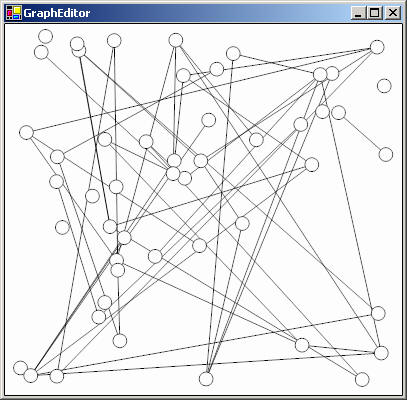

Getting Started
Here you will find both basic and advanced tutorials to help you get started using Piccolo2D. All tutorials provide examples in both Java and C#. This section assumes you have read Piccolo2D Patterns and have a basic understanding of the concepts presented there.
Graph Editor
This tutorial will illustrate how you might build a graph editor interface using Piccolo2D. Moving the mouse over a node will highlight that node. And, dragging a node will move that node around, keeping the edges connected.

Download the complete code sample in Java or
C#.
Play with the interface.
Overall Architecture
In this example, we will use the PPath node provided by Piccolo2D for both our
nodes and edges. Rather than creating our own data structure to keep track of the
connections, we will use PNode's Tag property in .NET and its
getAttribute and addAttribute methods in Java. Both of these
mechanisms provide the ability to attach extra information to a node without subclassing
it. For each node in the graph, we will attach a list of its connected edges. And
for each edge in the graph, we will attach a list of its connected nodes.
We will then create a reusable GraphEditor component that extends PCanvas. This component will add the nodes and edges to the scene-graph. We will also create an event handler class to drag the nodes and update the edges. Finally, we will create a wrapper window called GraphEditorTester and add our new component to the window.
1. Create a Graph Canvas
We will make a reusable component that extends PCanvas and initializes the graph.
-
We extend PCanvas and add some random nodes and edges. Add the following class to your project.
public class GraphEditor extends PCanvas { public GraphEditor(int width, int height) { setPreferredSize(new Dimension(width, height)); int numNodes = 50; int numEdges = 50; // Initialize, and create a layer for the edges // (always underneath the nodes) PLayer nodeLayer = getLayer(); PLayer edgeLayer = new PLayer(); getRoot().addChild(edgeLayer); getCamera().addLayer(0, edgeLayer); Random random = new Random(); // Create some random nodes // Each node's attribute set has an // ArrayList to store associated edges for (int i = 0; i < numNodes; i++) { float x = random.nextInt(width); float y = random.nextInt(height); PPath node = PPath.createEllipse(x, y, 20, 20); node.addAttribute("edges", new ArrayList()); nodeLayer.addChild(node); } // Create some random edges // Each edge's attribute set has an // ArrayList to store associated nodes for (int i = 0; i < numEdges; i++) { int n1 = random.nextInt(numNodes); int n2 = random.nextInt(numNodes); // Make sure we have two distinct nodes. while (n1 == n2) { n2 = random.nextInt(numNodes); } PNode node1 = nodeLayer.getChild(n1); PNode node2 = nodeLayer.getChild(n2); PPath edge = new PPath(); ((ArrayList)node1.getAttribute("edges")).add(edge); ((ArrayList)node2.getAttribute("edges")).add(edge); edge.addAttribute("nodes", new ArrayList()); ((ArrayList)edge.getAttribute("nodes")).add(node1); ((ArrayList)edge.getAttribute("nodes")).add(node2); edgeLayer.addChild(edge); updateEdge(edge); } // Create event handler to move nodes and update edges nodeLayer.addInputEventListener(...); } public void updateEdge(PPath edge) { // Note that the node's "FullBounds" must be used // (instead of just the "Bounds") because the nodes // have non-identity transforms which must be included // when determining their position. PNode node1 = (PNode) ((ArrayList)edge.getAttribute("nodes")).get(0); PNode node2 = (PNode) ((ArrayList)edge.getAttribute("nodes")).get(1); Point2D start = node1.getFullBoundsReference().getCenter2D(); Point2D end = node2.getFullBoundsReference().getCenter2D(); edge.reset(); edge.moveTo((float)start.getX(), (float)start.getY()); edge.lineTo((float)end.getX(), (float)end.getY()); } }public class GraphEditor : PCanvas { public GraphEditor(int width, int height) { this.Size = new Size(width, height); int numNodes = 50; int numEdges = 50; // Initialize, and create a layer for the edges // (always underneath the nodes) PLayer nodeLayer = this.Layer; PLayer edgeLayer = new PLayer(); Root.AddChild(edgeLayer); this.Camera.AddLayer(0, edgeLayer); Random rnd = new Random(); // Create some random nodes // Each node's Tag has an ArrayList // used to store associated edges for (int i=0; i<numNodes; i++) { float x = (float)(this.ClientSize.Width * rnd.NextDouble()); float y = (float)(this.ClientSize.Height * rnd.NextDouble()); PPath path = PPath.CreateEllipse(x, y, 20, 20); path.Tag = new ArrayList(); nodeLayer.AddChild(path); } // Create some random edges // Each edge's Tag has an ArrayList // used to store associated nodes for (int i=0; i<numEdges; i++) { int n1 = rnd.Next(numNodes); int n2 = n1; // Make sure we have two distinct nodes. while (n2 == n1) { n2 = rnd.Next(numNodes); } PNode node1 = nodeLayer[n1]; PNode node2 = nodeLayer[n2]; PPath edge = new PPath(); ((ArrayList)node1.Tag).Add(edge); ((ArrayList)node2.Tag).Add(edge); edge.Tag = new ArrayList(); ((ArrayList)edge.Tag).Add(node1); ((ArrayList)edge.Tag).Add(node2); edgeLayer.AddChild(edge); UpdateEdge(edge); } // Create event handler to move nodes and update edges nodeLayer.AddInputEventListener(new NodeDragHandler()); } public static void UpdateEdge(PPath edge) { // Note that the node's "FullBounds" must be used // (instead of just the "Bounds") because the nodes // have non-identity transforms which must be included // when determining their position. ArrayList nodes = (ArrayList)edge.Tag; PNode node1 = (PNode)nodes[0]; PNode node2 = (PNode)nodes[1]; PointF start = PUtil.CenterOfRectangle(node1.FullBounds); PointF end = PUtil.CenterOfRectangle(node2.FullBounds); edge.Reset(); edge.AddLine(start.X, start.Y, end.X, end.Y); } }First we create some randomly positioned ellipses, for our nodes. Next, we need to attach a list to each node, to store the connected edges. Piccolo2D.NET provides the ability to add an object reference as a tag whereas Piccolo2D.Java uses a set of named attributes instead. In the Java version, we use
addAttributeto attach an ArrayList. In the .NET version, we set each node'sTagproperty to an ArrayList.Next, we create some lines for our edges. Note, we use a separate layer added underneath the main layer, to insure that the nodes are always on top. For each edge, we randomly choose two nodes to connect. We add the edge to each node's list of edges and we add the nodes to the edge's list of nodes. The
UpdateEdgemethod is called to position the line's endpoints to the center points of each node.Finally, we add an event listener, defined below, to make our graph interactive.
2. Create a Drag Event Handler
We will create an event listener class to handle all of the interaction of our application, including highlighting and dragging nodes.
-
We extend
PDragSequenceEventHandlerto create an event listener that performs some operation during a drag sequence. Add the following code to your project. For the Java version, you should add the anonymous event listener class to the constructor.nodeLayer.addInputEventListener(new PDragEventHandler() { { PInputEventFilter filter = new PInputEventFilter(); filter.setOrMask(InputEvent.BUTTON1_MASK | InputEvent.BUTTON3_MASK); setEventFilter(filter); } public void mouseEntered(PInputEvent e) { super.mouseEntered(e); if (e.getButton() == MouseEvent.NOBUTTON) { e.getPickedNode().setPaint(Color.RED); } } public void mouseExited(PInputEvent e) { super.mouseExited(e); if (e.getButton() == MouseEvent.NOBUTTON) { e.getPickedNode().setPaint(Color.WHITE); } } protected void startDrag(PInputEvent e) { super.startDrag(e); e.setHandled(true); e.getPickedNode().moveToFront(); } protected void drag(PInputEvent e) { super.drag(e); ArrayList edges = (ArrayList) e.getPickedNode().getAttribute("edges"); for (int i = 0; i < edges.size(); i++) { GraphEditor.this.updateEdge((PPath) edges.get(i)); } } });class NodeDragHandler : PDragEventHandler { public override bool DoesAcceptEvent(PInputEventArgs e) { return e.IsMouseEvent && (e.Button != MouseButtons.None || e.IsMouseEnterOrMouseLeave); } public override void OnMouseEnter(object sender, PInputEventArgs e) { base.OnMouseEnter (sender, e); if (e.Button == MouseButtons.None) { e.PickedNode.Brush = Brushes.Red; } } public override void OnMouseLeave(object sender, PInputEventArgs e) { base.OnMouseLeave (sender, e); if (e.Button == MouseButtons.None) { e.PickedNode.Brush = Brushes.White; } } protected override void OnStartDrag(object sender, PInputEventArgs e) { base.OnStartDrag(sender, e); e.Handled = true; e.PickedNode.MoveToFront(); } protected override void OnDrag(object sender, PInputEventArgs e) { base.OnDrag (sender, e); ArrayList edges = (ArrayList)e.PickedNode.Tag; foreach (PPath edge in edges) { GraphEditor.UpdateEdge(edge); } } }When the mouse enters a node, we set the node's fill color to red to highlight the node. When the mouse leaves a node, we set it's fill color back to white. We only do this when no mouse buttons are pressed because we don't want to highlight a node when the mouse is dragged overtop of it. And, we consume the drag event, so that we will not pan when a node is dragged.
We also need to update the edges. During a drag sequence, we iterate over the dragged node's edges and call
UpdateEdgeon each one. Recall this method gets the two nodes each edge connects, and then repositions the edge to the center points of each connected node.
3. Add the Canvas to a Window
Now we are ready to add our new component to the window.
-
We create a
JFramein Java or aFormin .NET as a wrapper for our component. Add the following class to your project.public class GraphEditorTester extends JFrame { public GraphEditorTester() { setTitle("Piccolo2D Graph Editor"); setDefaultCloseOperation(JFrame.EXIT_ON_CLOSE); GraphEditor graphEditor = new GraphEditor(500, 500); getContentPane().add(graphEditor); pack(); setVisible(true); } public static void main(String args[]) { new GraphEditorTester(); } }public class GraphEditorTester : System.Windows.Forms.Form { public GraphEditorTester() { GraphEditor graphEditor = new GraphEditor(this.ClientSize.Width, this.ClientSize.Height); Controls.Add(graphEditor); graphEditor.Bounds = this.ClientRectangle; graphEditor.Anchor = graphEditor.Anchor | AnchorStyles.Right | AnchorStyles.Bottom; } static void Main() { Application.Run(new GraphEditorTester()); } }First, we create an instance of our GraphEditor component and add it to the form's list of controls. Then, we anchor or new component to the sides of the window, so that it will get resized when the window is resized.